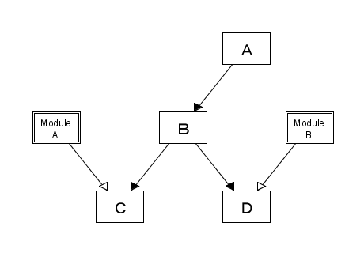
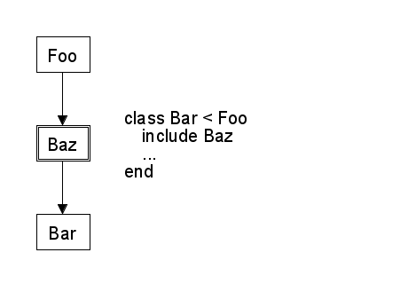
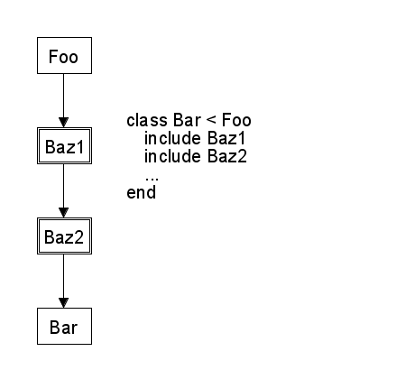
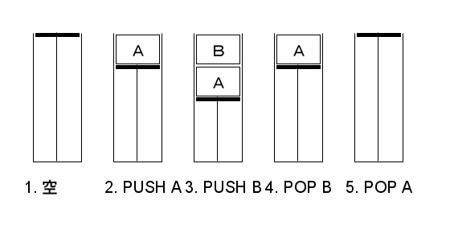
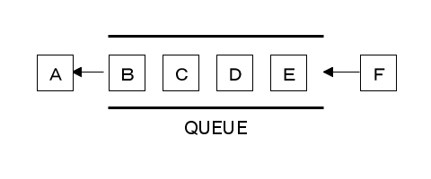

前回は単一継承について簡単に説明し、具体的な例題として連結リストクラス List を継承して制限付き連結リストクラス FixedList を作成しました。今回は多重継承と Mix-in について説明します。
一般のオブジェクト指向言語の場合、継承によって引き継がれる性質は定義されたデータ (インスタンス変数など) やメソッドになります。これを「実装の継承」と呼びます。また、インスタンス変数を継承することを特別に「属性の継承」と呼ぶ場合があります。なお、Java の interface のようにメソッドの仕様だけを継承する方法もあります。これを「仕様の継承」といいます。
多重継承を行う場合、異なる性質や機能を持つクラスを継承することがあります。たとえば、クラス Foo にはメソッド method_a() があり、クラス Bar にはメソッド method_b() があるとしましょう。この 2 つのメソッドはまったく異なる働きをします。ここで、メソッド method_a() はインスタンス変数 @x を使っていて、method_b() も @x を使っていると、多重継承で問題が発生します。
一般的な多重継承で、クラス Foo と Bar を継承してクラス Baz を作成した場合、クラス Baz のインスタンスに変数 @x は一つしか存在しません。メソッド method_a() と method_b() は一つしかない @x を使うことになります。この場合、どちらかのメソッドは正常に動作しないでしょう。これでは多重継承する意味がありませんね。
また、多重継承ではインスタンス変数だけではなく、メソッド名が衝突する場合もあります。このように、多重継承では名前の衝突が発生する危険性があるのです。それから、多重継承にはもう一つ問題点があります。それはクラスの階層構造が複雑になることです。
単一継承の場合、クラスの階層は木構造になりますが、多重継承ではグラフになります。木構造の場合、クラスの優先順位は簡単に決めることができますが、グラフになると優先順位を決めるためのアルゴリズムは複雑になり、それを理解するのは難しくなります。多重継承は強力な機能ですが、使うときには十分な注意が必要になるのです。
ちなみにＣ++の場合、多重継承したクラスに同名のメソッドがある場合、どちらを呼び出すのか明確に指定しないとコンパイルでエラーとなります。またＣ++はメンバ変数も継承されるため、変数名の衝突も発生します。この場合も、どちらの変数を使用するのか明確に指定しないとコンパイルエラーとなります。
このほかにも、多重継承ではいろいろな問題が発生するため、それを解決するためにＣ++ではいろいろな機能が用意されています。ところが、それらの機能がＣ++をいっそう複雑な言語にしていると筆者には思えてなりません。Ｃ++はコンパイラ型の言語で、なによりも効率を重視するため、Ruby のようなインタプリタ型の言語よりも複雑な言語仕様になるのは避けられないのかもしれません。
これらの問題を回避するため、属性を継承するスーパークラスは一つだけに限定して、あとのスーパークラスは実装だけを継承するという方法があります。この方法を Mix-in といいます。
具体的には、インスタンス変数を定義せずにメソッドだけを記述したクラスを用意します。属性の継承は単一継承になりますが、実装のみを記述したクラスはいくつ継承してかまいません。一つのクラスに複数の実装を混ぜることから Mix-in と呼ばれています。
なお、Mix-in は特別な機能ではなく、多重継承を使いこなすための方法論にすぎません。多重継承を扱うことができるプログラミング言語であれば Mix-in を行うことが可能です。
この Mix-in という方法を言語仕様に取り込んだのが Ruby です。Ruby では実装だけを記述するクラスのことをモジュール (Module) といいます。モジュールはインスタンスを生成することができませんし、他のクラスを継承することも、スーパークラスになることもできません。定義できるのは定数やメソッドだけになります。
Ruby の Mix-in を図 1 に示します。

図 1 : Mix-in
クラス C はクラス B を継承していて、そこに ModuleA が Mix-in されています。クラス D もクラス B を継承していますが、Mix-in されているモジュールは ModuleB となります。
多重継承の問題点は Mix-in ですべて解決できるわけではありませんが、クラスの階層構造がすっきりとしてわかりやすくなることは間違いありません。Mix-in は多重継承を使いこなす優れた方法だと思います。
それでは、具体的にモジュールの使い方を説明しましょう。モジュールの定義は module 文で行います。
module モジュール名 メソッドの定義 ... end
メソッドの定義は今までと同じで def 文を使います。また、モジュールの中で定数を定義することもできます。クラスでモジュールを Mix-in するには、class の中で include 文を使います。簡単な例を示しましょう。リスト 1 を見てください。
リスト 1 : モジュールの使い方
class Foo
def initialize
@a = 10
end
attr_accessor :a
def method_foo
puts "method_foo #{@a}"
end
end
module Baz
def method_baz
puts "method_baz"
method_foo
method_bar
end
end
class Bar < Foo
include Baz
def initialize
super
@b = 20
end
attr_accessor :b
def method_bar
puts "method_bar #{@b}"
end
end
クラス Foo にはインスタンス変数 @a とメソッド method_foo()、クラス Bar にはインスタンス変数 @b とメソッド method_bar()、モジュール Baz にはメソッド method_baz() が定義されています。
Baz は Bar から include されているので、Baz のメソッドは Bar のメソッドと同様に呼び出すことができます。また、Baz のメソッドから Foo や Bar のメソッドを呼び出すこともできますし、Foo や Bar のインスタンス変数にもアクセスすることができます。
実際に実行すると、次のようになります。
irb> a = Bar.new => #<Bar: ... > irb> a.method_baz method_baz method_foo 10 method_bar 20 => nil
このように、モジュールをインクルードとすることで、そこに定義されているメソッドを呼び出すことができます。
ところで、Ruby はインスタンス変数を実行時に生成することができるので、モジュールのメソッド内でインスタンス変数を定義することも可能です。この場合、インクルードされているクラスのインスタンスに新しいインスタンス変数が追加されることになります。
ただし、この方法はお勧めいたしません。インスタンス変数の定義と初期化はクラス内の initialize() で行い、そのアクセスはメソッドを経由して行ったほうがわかりやすいプログラムになると思います。モジュール内で定義するのは定数やメソッドだけに限定したほうが無難です。
なお、モジュールは Mix-in のためだけではなく、Math モジュールのように関数的なメソッドをまとめておくことや、名前が衝突しないようにクラスや定数をまとめておくことにも使われています。
Ruby の場合、モジュールはクラスの一種なので、メソッドの優先順位を定めるため、クラスとインクルードされたモジュールは次のような階層関係になります。
 （１）  （２） 図 2 : モジュールとクラスの階層構造
インクルードされたモジュールはスーパークラスとインクルードしたクラスの間に入ります。図 2 (1) で Foo と Baz に同名のメソッドが存在する場合、Baz のメソッドが優先されます。複数のモジュールをインクルードする場合も同じです。たとえば inluce Baz1, include Baz2 とすると、図 2 (2) に示す階層構造になります。したがって、Baz1 と Baz2 に同名のメソッドが存在した場合、Baz2 のメソッドが優先されます。
Ruby には便利なモジュールがあらかじめ用意されています。特に、Comparable と Enumerable はとても役に立ちます。Comparable をインクルードすると、インスタンスの大小関係を比べるのに通常の比較演算子を使うことができるようになります。Comparable で定義されているメソッドは、そのクラスのメソッド <=>() を呼び出して動作するように実装されています。
また、Enumerable をインクルードすると、member?() や map() など役に立つメソッドが利用できるようになります。Enumerable のメソッドは、そのクラスのメソッド each() を呼び出して動作するように実装されています。たとえば、前々回に作成した List クラスには each() が定義されているので、Enumerable をインクルードするだけで便利なメソッドを追加することができます。
それでは、クラス List で Comparable と Enumerable モジュールをインクルードしてみましょう。List にはメソッド each() が定義されているので、メソッド <=>() が必要になります。リスト 2 を見てください。
リスト 2 : メソッド <=> の定義
def <=>(other)
cp1 = @top.link
cp2 = other.top.link
while true
return 0 if !cp1 && !cp2
if !cp1 || (cp2 && cp1.data < cp2.data)
return -1
elsif !cp2 || cp1.data > cp2.data
return 1
end
cp1 = cp1.link
cp2 = cp2.link
end
end
連結リストの先頭から順番に要素を比較していきます。cp1 と cp2 が nil ならば、すべての要素が等しいので 0 を返します。次に、cp1 が nil ならば、cp1 のリストが短いので -1 を返します。また、cp2 のリストに要素が残っていて、cp1.data < cp2.data の場合も -1 を返します。
次に、cp2 が nil であれば、cp2 のリストが短いので 1 を返します。また、cp1.data > cp2.data の場合も 1 を返します。それ以外の場合は cp1.data と cp2.data が等しいので次の要素を調べます。
あとは、モジュールを include するだけです。簡単な実行例を示しましょう。
irb> a = List.new 1,2,3,4 => #<List: ... > irb> b = List.new 1,2,3,5 => #<List: ... > irb> a < b => true irb> b < a => false irb> a.member? 4 => true irb> b.member? 4 => false
このように、Comparable と Enumerable をインクルードするだけで、クラスに便利なメソッドを追加することができます。
次は連結リストを使って「スタック (stack)」という基本的なデータ構造を作ってみましょう。図 3 を見てください。

図 3 : スタックの動作例
図 3 はバネがついた容器を表していて、上から品物を出し入れすることができます。初めは空の状態です。ここに品物を乗せると、重さによってバネを圧縮し、品物が容器に格納されます。さらにもう一つ品物を上に乗せると、さらにバネを圧縮し、その品物も容器に格納することができます。バネが限界まで圧縮されると、もう品物は追加できなくなります。取り出す場合は、上にある品物から行います。一つ取り出すと、その分バネが伸びて下にある品物が上に押し出されます。
この容器の動作がスタックの動作なのです。スタックにデータを追加する操作をプッシュ (PUSH) といい、スタックからデータを取り出す操作をポップ (POP) といいます。品物をデータに見立てれば、データ A をスタックにプッシュし (2)、次にデータ B をプッシュします (3)。データを取り出す場合、あとから入れたデータ B が先にポップされ (4)、その次にデータ A がポップされてスタックが空になります (5)。
このように、スタックはあとから入れたデータが先に取り出されるので、後入れ先出し (LIFO : Last-In, First-Out) と呼ばれます。
今まで説明したように、オブジェクトは関数とデータを一つにまとめたものです。オブジェクト指向プログラミングは、このオブジェクトを部品として扱います。実際には、クラス単位でプログラムを作るので、クラス間の関係がとても重要になります。ここで、クラス間の関係 is-a と has-a を簡単に説明します。
is-a 関係は X is a Y. の略で、「X は Y の一種である」という意味になります。X がサブクラスで Y をスーパークラスと考えると、is-a 関係は継承で表すことができます。たとえば、制限付き連結リストは、格納する要素の個数が制限されていますが連結リストの一種であることは明らかです。FixedList クラスは List クラスを継承することで簡単に実装できましたが、それは連結リストとの間に is-a 関係があるからです。
has-a 関係は X has a Y. の略で、「X は Y を持っている」という意味です。たとえば、車にはエンジンやタイヤがありますが、車とエンジンやタイヤに成り立つ関係が has-a です。車はエンジンやタイヤがないと走ることができません。このように、has-a 関係は「X が成立するのに欠かせない要素が Y である」という関係を表しています。
has-a 関係のほかに、is-implemented-using という関係があります。これは X is implemented using Y. の略で、「X は Y を使って実装される」という意味です。たとえば、スタックの場合、配列でも連結リストでも実装することが可能です。つまり、Y の種類によらず X を実現できる関係が is-implemented-using 関係なのです。
一般に、has-a 関係や is-implemented-using 関係は、クラス X のインスタンス変数にクラス Y のオブジェクト（インスタンス）を格納することで表します。これを「X は Y を包含している」といいます。そして、これらの関係を表すのに継承を使ってはいけない、ということに注意してください。
たとえば、連結リストを継承してスタックを作ることを考えてみましょう。PUSH は連結リストの先頭にデータを追加することで、POP は連結リストの先頭からデータを取り出すことで簡単に実現できます。しかし、連結リストを継承すると、ほかの操作も可能になります。スタックの途中にデータを追加したり、途中からデータを取り出すなど、スタックを破壊する危険な操作が可能になってしまいます。
また、クラスの関係を考えた場合、スタックと連結リストには is-a 関係は成り立ちません。ところが、継承を使うとデータ型も引き継がれるため、プログラムの上でもスタックは連結リストの一種になってしまいます。継承は強力な機能ですが万能ではありません。クラス間の関係を考えて、適切に使うことが大切です。
それでは、実際に連結リストを使ってスタックを実装してみましょう。クラス名は Stack とし、表 1 に示すメソッドを定義します。プログラムはリスト 3 のようになります。
| メソッド | 機能 |
|---|---|
| s.push(x) | スタック s にデータを追加する |
| s.pop() | スタック s からデータを取り出す |
| s.top() | スタック s の先頭データを返す |
| s.empty?() | スタック s が空ならば true を返す |
リスト 3 : スタック
class Stack
def initialize
@content = List.new
end
def push(x)
@content.insert!(0, x)
end
def pop
@content.delete_at!(0)
end
def top
@content.at(0)
end
def empty?
@content.empty?
end
def inspect
sprintf("#<Stack:%#x>", self.object_id)
end
end
メソッド initialize() でインスタンス変数 @content に List のインスタンスを生成してセットします。あとは、このインスタンスを使ってスタックを実装します。
メソッド push() はスタックにデータ x を追加します。これは連結リストの先頭に x を追加すればいいので、メソッド insert!(0, x) を呼び出すだけです。メソッド pop() は先頭のデータを delete_at!(0) で取り出します。delete_at!() は取り出したデータを返すので、これでスタックの動作になります。メソッド top() は先頭のデータを削除せずに返し、メソッド empty?() はスタックが空の場合は true を返します。
それでは実行してみましょう。
irb> a = Stack.new
=> #<Stack: ... >
irb> 5.times {|x|
irb> a.push x
irb> }
=> 5
irb> while not a.empty?
irb> puts a.pop
irb> end
4
3
2
1
0
=> nil
スタックに 0 から 4 まで push() で格納します。その後、pop() でデータを取り出すと 4, 3, 2, 1, 0 になります。このように、スタックは後から入れたデータが先に取り出されます。
最後にもう一つ「キュー (queue)」という基本的なデータ構造を作ってみましょう。たとえばチケットを買う場合、カウンタの前に並んで順番を待たなくてはいけません。キューはカウンタの前に並ぶ行列と考えてください。列の先頭にいる人から順番にチケットを買うことができますが、あとから来た人は列の後ろに並ばなくてはいけません。列の先頭まで進むと、チケットを購入することができます。これを表したのが図 4 です。

図 4 : キューの構造
このように、キューはデータを取り出すときは列の先頭から行い、データを追加するときは列の後ろへ行います。このため、キューは「待ち行列」とか「先入れ先出し (FIFO : first-in,first-out)」と呼ばれます。
キューは連結リストを使って簡単に実装することができますが、大きな欠点もあります。連結リストをキューとして使う場合、データを追加するときに最後尾までセルをたどっていく操作が必要になるため、要素数が多くなるとデータの追加に時間がかかってしまうのです。
この場合、最後尾のセルを参照する変数を用意する、または「循環リスト (circular list)」というデータ構造を使うといった方法が考えられます。今回はちょっと変わった方法ですが、連結リストを 2 つ使ってキューを作ってみましょう。
考え方は簡単です。2 つの連結リストを @front と @rear に用意します。@front のリストの先頭がキューの先頭を表し、@rear のリストの先頭がキューの最後尾を表します。したがって、データを取り出す操作は @front の先頭から要素を取り出すだけですみ、データを追加する操作は @rear の先頭にデータを追加するだけですみます。
データを取り出すとき、@front が空リストの場合は @rear からデータを移動します。このとき、@rear の先頭から順番に要素を取り出して、それを @front の先頭に追加していくと、@front の要素は @rear の逆順で並ぶことになります。つまり、最初に追加されたデータが @front の先頭になるわけです。
たとえば、空のキューにデータ 1, 2, 3 を追加すると、@front = nil, @rear = (3, 2, 1) になります。ここでキューからデータを取り出すとき、@rear から @front へデータを移動すると @front = (1, 2, 3), @reaf = nil になります。そして、@front の先頭の要素を順番に取り出すと 1, 2, 3 になり、キューとして動作することが分かります。
それでは、プログラムを作りましょう。定義するメソッドを表 2 に、プログラムをリスト 4 に示します。
| メソッド | 機能 |
|---|---|
| q.enqueue!(x) | キューにデータを追加する |
| q.dequeue!() | キューからデータを取り出す |
| q.peek() | キューの先頭のデータを返す |
| q.empty?() | キューが空ならば true を返す |
リスト 4 : キュー
class Queue
def initialize
@size = 0
@front = List.new
@rear = List.new
end
def move_data
while not @rear.empty?
@front.insert!(0, @rear.delete_at!(0))
end
end
private :move_data
def enqueue!(x)
@size += 1
@rear.insert!(0, x)
end
def dequeue!
if @size > 0
move_data if @front.empty?
@size -= 1
@front.delete_at!(0)
end
end
def peek
if @size > 0
move_data if @front.empty?
@front.at(0)
end
end
def empty?
@size == 0
end
def inspect
sprintf("#<Queue:%#x>", self.object_id)
end
end
キューのクラス名は Queue としました。initialize() で 2 つの連結リストを生成して @front と @rear にセットします。そして、データ数を表すインスタンス変数 @size を 0 に初期化します。
次に private メソッド move_data() を定義します。@rear にデータがある限り、delete_at!() で先頭のデータを取り出して、@front の先頭に insert!() で追加します。
データの追加はメソッド enqueue!() で行います。この操作は簡単で、@size を +1 してから insert!() で @rear の先頭にデータを追加するだけです。
データの取り出しはメソッド dequeue!() で行います。@size が0 より大きい場合はデータを取り出し、そうでなければ nil を返します。@front が空リストの場合は move_data() で @rear のデータを移動します。そして、@size を -1 してから delete_at!() で @front の先頭要素を取り出して返します。
それでは、簡単な実行例を示します。
irb> q = Queue.new
=> #<Queue: ... >
irb> 5.times {|x|
irb> q.enqueue! x
irb> }
=> 5
irb> while not q.empty?
irb> puts q.dequeue!
irb> end
0
1
2
3
4
=> nil
0 から 4 まで順番に enqueue!() でキューに追加します。その後、dequeue()! でデータを取り出すと 0, 1, 2, 3, 4 になります。スタックとは逆に、キューはデータを入れた順番でデータが取り出されます。
Ruby のオブジェクト指向機能は、まず最初にクラスを定義し、それを元にしてインスタンス (オブジェクト) を生成します。これは Smalltalk, Ｃ++, Java などポピュラーなオブジェクト指向言語でも同じです。このようにクラスを中心としたオブジェクト指向を「クラスベース」といいます。
クラスはオブジェクト指向機能の中心で、クラスがなければ何も始まらないと思われる方もいるでしょう。ところが、クラスが存在しないオブジェクト指向もあるのです。これを「プロトタイプベース」といいます。もしくは「インスタンスベース」と呼ばれることもあるようです。代表的な言語として Self や JavaScript があります。
プロトタイプベースの言語では、元となるインスタンスをコピーすることで新しいインスタンスを生成します。このコピー元のインスタンスを「プロトタイプ」といいます。そして、新しいインスタンスに必要となる機能 (メソッドなど) を追加します。このインスタンスが新たなプロトタイプとなり、あとはこのプロトタイプを必要な分だけコピーしてインスタンスを生成すればいいわけです。
特定のインスタンスにメソッドを追加する機能は Ruby の特異メソッドそのものです。Ruby はクラスベースのオブジェクト指向言語ですが、クラスメソッドの実装に特異メソッドが使われているように、プロトタイプベースのオブジェクト指向を取り込んでいて、それを有効に活用しています。
多重継承と Mix-in について説明しました。クラスに Comparable と Enumerable モジュールを Mix-in することで、比較演算子やコレクションを操作する便利なメソッドを簡単に追加することができます。継承は強力な機能ですが、クラス間の関係を考えて使う必要があります。スタックやキューのように、継承ではなく包含関係を使った方がよい場合もあります。次回はプログラムでよく用いられるデータ構造である「二分木」を作ってみましょう。
#
# list12.rb : お気楽 Ruby プログラミング入門
# 第 12 回 プログラムリスト
#
# Copyright (C) 2008 Makoto Hiroi
#
# 連結リスト
class List
include Enumerable
include Comparable
# セルの定義
class Cell
attr_accessor :data, :link
def initialize(data, link = nil)
@data = data
@link = link
end
end
# 初期化
def initialize(*args)
@top = Cell.new(nil) # Header Cell をセット
args.reverse_each do |x|
insert!(0, x)
end
end
attr_accessor :top
protected :top, :top=
# n 番目のセルを求める
def nth(n)
i = -1
cp = @top
while cp
return cp if n == i
i += 1
cp = cp.link
end
end
private :nth
# n 番目にデータを挿入する
def insert!(n, data)
cp = nth(n - 1)
if cp
cp.link = Cell.new(data, cp.link)
data
end
end
# n 番目のデータを求める
def at(n)
cp = nth(n)
cp.data if cp
end
# n 番目のデータを削除する
def delete_at!(n)
cp = nth(n - 1)
if cp and cp.link
data = cp.link.data
cp.link = cp.link.link
data
end
end
# 空リストか
def empty?
!@top.link
end
# 演算子 [] の定義
# 参照
def [](n)
at(n)
end
# 代入
def []=(n, value)
cp = nth(n)
if cp
cp.data = value
end
end
# リストの連結
def append(cp1, cp2)
if !cp1
cp2
else
Cell.new(cp1.data, append(cp1.link, cp2))
end
end
private :append
def +(other)
raise TypeError unless other.instance_of?(List)
ls = List.new
ls.top.link = append(@top.link, other.top.link)
ls
end
def *(n)
ls = List.new
n.times do
ls.top.link = append(@top.link, ls.top.link)
end
ls
end
# Enumerable 用
def each
cp = @top.link
while cp
yield cp.data
cp = cp.link
end
self
end
# 配列に変換
def to_a
a = []
each do |x| a.push(x) end
a
end
# 文字列に変換
def to_s
"(" << to_a.join(",") << ")"
end
def inspect
sprintf("#<List:%#x>", self.object_id)
end
# Comparable 用
def <=>(other)
cp1 = @top.link
cp2 = other.top.link
while true
return 0 if !cp1 && !cp2
if !cp1 || (cp2 && cp1.data < cp2.data)
return -1
elsif !cp2 || cp1.data > cp2.data
return 1
end
cp1 = cp1.link
cp2 = cp2.link
end
end
end
# スタック
class Stack
def initialize
@content = List.new
end
def push(x)
@content.insert!(0, x)
end
def pop
@content.delete_at!(0)
end
def top
@content.at(0)
end
def empty?
@content.empty?
end
def inspect
sprintf("#<Stack:%#x>", self.object_id)
end
end
# キュー
class Queue
def initialize
@size = 0
@front = List.new
@rear = List.new
end
def move_data
while not @rear.empty?
@front.insert!(0, @rear.delete_at!(0))
end
end
private :move_data
def enqueue!(x)
@size += 1
@rear.insert!(0, x)
end
def dequeue!
if @size > 0
move_data if @front.empty?
@size -= 1
@front.delete_at!(0)
end
end
def peek
if @size > 0
move_data if @front.empty?
@front.at(0)
end
end
def empty?
@size == 0
end
def inspect
sprintf("#<Queue:%#x>", self.object_id)
end
end